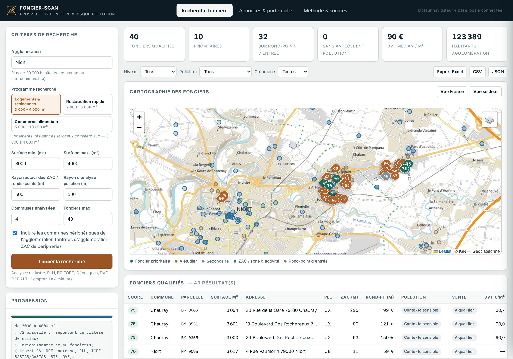
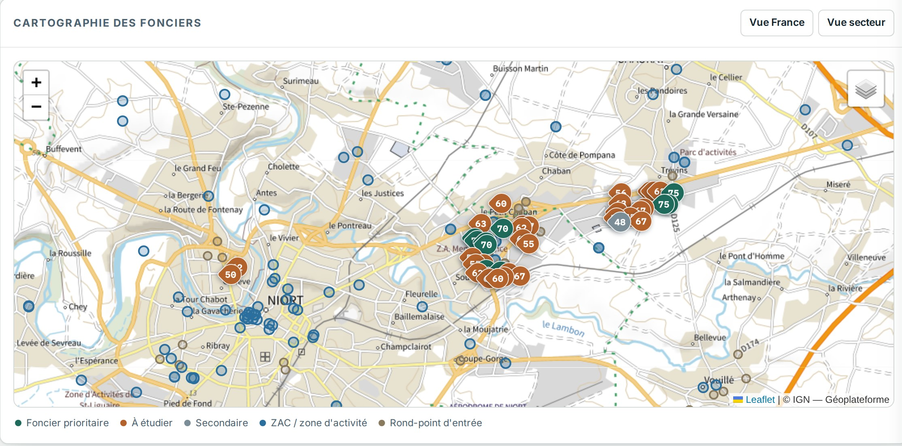
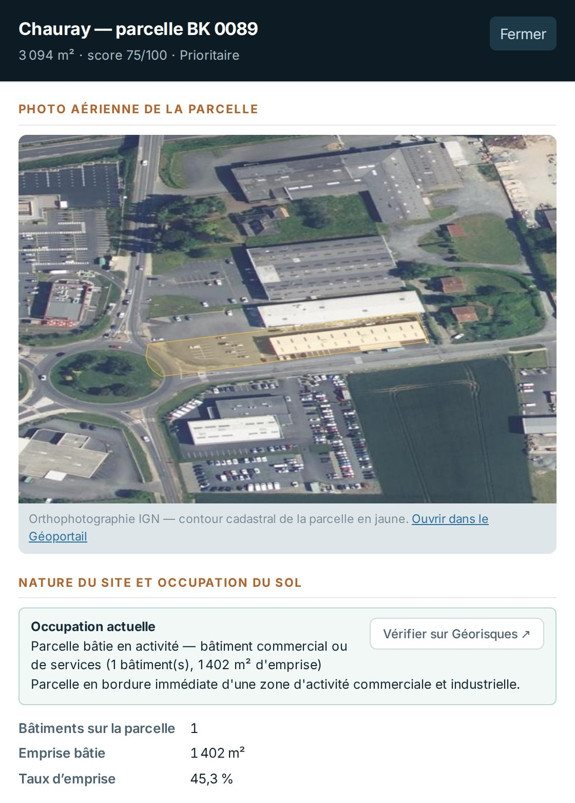
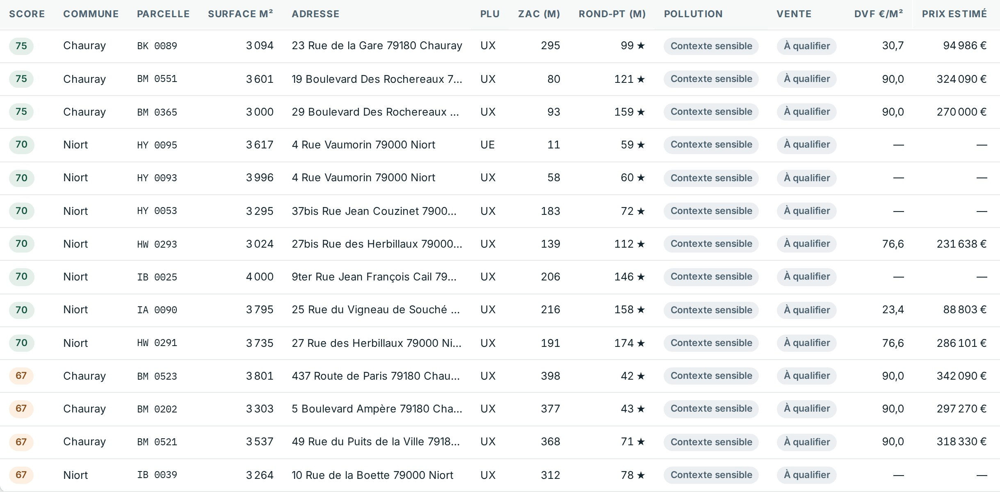

Application en ligne · destinée aux services développement
Vous saisissez le nom d'une agglomération de plus de 20 000 habitants et choisissez le programme visé — logements et résidences, restauration rapide ou commerce alimentaire. FONCIER-SCAN identifie les parcelles de la surface correspondante situées dans ou en bordure immédiate des zones d'activité, sur les ronds-points d'entrée d'agglomération, et les qualifie une par une : référence cadastrale, Lambert 93, altitude NGF, zonage PLU, antécédents de pollution, photo aérienne, propriétaire présumé et référence de prix.
Essai gratuit de 8 jours, toutes fonctions comprises, sans engagement · puis abonnement annuel 2 500 € HT par poste · sans carte bancaire · rien à installer : l'application s'ouvre depuis votre compte G.M.E.P.

Origine de l'outil
FONCIER-SCAN a été conçu par Eric Azulay, responsable conception et modélisation de G.M.E.P, à partir de plusieurs années d'études de pollution, de diagnostics de sites et de dossiers réglementaires conduits pour des promoteurs, des aménageurs et des collectivités. L'outil prend en compte les besoins exprimés par les services développement eux-mêmes, sur deux points précis : la recherche du foncier, et le risque que fait peser le passif environnemental sur l'opération.
Côté développement foncier, la recherche du terrain et l'appréciation du risque environnemental sont presque toujours conduites séparément. Le foncier est repéré, sécurisé, parfois signé — puis les antécédents industriels se révèlent : ancienne installation classée sur l'emprise, activité BASIAS absente de l'acte, secteur d'information sur les sols grevant la parcelle. Le programme est alors renégocié, retardé ou abandonné, après avoir immobilisé des mois de travail.
L'outil répond à ce besoin : voir sur une même carte les fonciers compatibles avec le programme visé et leur passif environnemental, avant l'engagement, et non après.
L'outil signale le risque et le documente. Il ne remplace ni un diagnostic de pollution, ni une étude de sols : il indique quand l'engager, et sur quel terrain.
Programmes
Chaque programme règle d'un clic la fourchette de surface recherchée. Les bornes restent modifiables pour une plage personnalisée.
Plage recherchée par les développeurs de McDonald's, KFC et Burger King : unités isolées sur rond-point d'entrée d'agglomération, en entrée de zone commerciale, avec visibilité et accès directs.
Plage recherchée par Grand Frais, Lidl et Aldi : emprises permettant un bâtiment de vente et son parking, en périphérie commerciale ou en ZAC desservie.
Plage d'origine du logiciel : opérations de logements collectifs, résidences gérées et locaux commerciaux en pied d'immeuble, dans ou à proximité immédiate des agglomérations.
Méthode
Les parcelles bien situées de 2 000 à 10 000 m² se négocient avant publication. FONCIER-SCAN les détecte à la source, dans les données publiques, qu'elles soient en vente ou non : terrains nus, friches à requalifier, anciennes stations-service, garages, bâtiments commerciaux et industriels en zone d'activité.
À partir du nom de l'agglomération, la commune-centre et son intercommunalité sont retenues au-delà de 20 000 habitants, puis les communes périphériques d'entrée d'agglomération.
Les parcelles de la surface recherchée sont extraites du cadastre autour de chaque rond-point et de chaque zone d'activité, avec leur contenance officielle.
Chaque foncier reçoit une note de 0 à 100 combinant la proximité des ZAC et des ronds-points, le zonage et le niveau d'antécédents de pollution.

Fiche foncier
La fiche ouvre sur l'orthophotographie IGN de la parcelle, contour cadastral superposé, puis qualifie le site et son environnement. Quand le foncier est une friche ou porte un antécédent de pollution en secteur SIS, un bouton conduit directement au rapport Géorisques de l'adresse.

Portefeuille
Les résultats se filtrent par niveau, commune et niveau d'antécédents, puis s'exportent en Excel, CSV ou JSON avec l'ensemble des colonnes techniques. Les annonces déjà collectées s'importent depuis un modèle Excel et se rattachent automatiquement au cadastre, ce qui ramène chaque annonce à une parcelle réelle.

Sources
Aucune base revendue ni figée : le logiciel interroge les services officiels au moment de la recherche.
Cadastre et orthophotographies IGN, BD TOPO (bâtiments, ronds-points, zones d'activité), RGE ALTI pour l'altitude NGF, Base Adresse Nationale.
Géoportail de l'urbanisme pour le zonage PLU et les zones d'aménagement, Demandes de valeurs foncières (DVF) pour les références de prix au m².
Géorisques : installations classées ICPE, inventaire historique BASIAS/CASIAS, sites BASOL, secteurs d'information sur les sols. Annuaire des entreprises SIRENE et RNE.
Tarif
Soit 3 000 € TTC (TVA 20 %). Abonnement de douze mois, reconductible. Facturation à la commande, par virement ou carte.
Au-delà de trois postes, ou pour une facturation sur bon de commande, adressez votre demande à gmep.france@gmail.com : un devis est établi en retour.
Accès
FONCIER-SCAN est une application en ligne, hébergée par G.M.E.P. Vous créez un compte, vous ouvrez l'outil depuis votre navigateur, et vous travaillez. Aucun logiciel à déployer, aucun droit administrateur, aucune intervention de votre service informatique.
Nom, adresse professionnelle et mot de passe. Aucune carte bancaire n'est demandée pour l'essai.
L'intégralité des fonctions est ouverte pendant huit jours calendaires : recherches illimitées, cartographie, fiches et exports, sur autant d'agglomérations que souhaité.
À l'échéance, l'abonnement annuel s'active en ligne par paiement sécurisé. Aucun prélèvement n'a lieu tant que vous n'avez pas souscrit, aucune reconduction surprise.
L'accès est nominatif, un poste par abonnement. Les recherches que vous menez ne sont pas exploitées à d'autres fins que le fonctionnement du service.
Questions fréquentes
Il distingue deux situations. Les fonciers issus d'annonces importées sont marqués « en vente » avec leur prix, leur contact et le lien de l'annonce. Les fonciers détectés par analyse cadastrale sont marqués « à qualifier » : ce sont des fonciers mutables, pas nécessairement commercialisés — c'est précisément l'intérêt d'aller les chercher avant publication. Le statut est modifiable au fil de la prospection.
Le logiciel identifie les sociétés géolocalisées sur la parcelle et à proximité immédiate via l'annuaire des entreprises, et signale comme propriétaire présumé une SCI, une foncière ou une société de patrimoine implantée sur l'emprise. Les dirigeants et le SIREN sont restitués. Il s'agit d'un faisceau d'indices : les noms des propriétaires particuliers ne sont pas diffusés en données ouvertes, et le titulaire cadastral s'obtient par relevé de propriété auprès du service du cadastre ou par un notaire.
Non. Le prix au m² provient des mutations DVF de la section cadastrale : c'est une référence de marché servant à estimer un ordre de grandeur. Le prix vendeur n'existe que lorsqu'il provient d'une annonce ou d'un contact, et se saisit dans la fiche.
Non. Le logiciel restitue les antécédents recensés — ICPE, BASIAS, CASIAS, BASOL, secteurs d'information sur les sols — et conduit au rapport Géorisques de l'adresse. C'est un outil de tri en amont ; l'appréciation d'un site pollué relève d'un diagnostic de sols selon la méthodologie nationale.
Vous créez un compte sur app.gmep-france.eu et l'accès s'ouvre immédiatement, pour 8 jours calendaires. Toutes les fonctions sont ouvertes, exports compris. Aucun moyen de paiement n'est demandé et il n'y a aucune reconduction automatique : à l'échéance, l'outil propose la souscription. Une période d'essai par compte, réservée à une évaluation interne.
Non. FONCIER-SCAN s'ouvre dans votre navigateur depuis votre compte G.M.E.P : aucun déploiement, aucun droit administrateur, aucun serveur à administrer. Un navigateur à jour et une connexion internet suffisent, sur Windows comme sur macOS.
Les critères et les fiches que vous produisez servent uniquement à l'exécution de vos recherches ; les données interrogées sont celles des bases publiques officielles. G.M.E.P conserve les informations d'identification du titulaire du compte pour la gestion de l'abonnement, et n'exploite pas vos recherches à d'autres fins.
Non. FONCIER-SCAN est un produit distinct, destiné aux services développement des promoteurs, aménageurs et enseignes, et non aux bureaux d'études. Son abonnement est indépendant de celui de la suite SSP et hydrologie de G.M.E.P, et n'est pas compris dans l'abonnement groupé de cette suite.